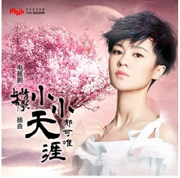
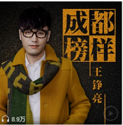
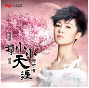
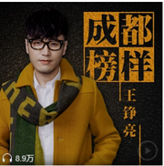

星月 (《楚乔传》电视剧情感主题曲)
王铮亮/郁可唯
词：刘畅/曹允
曲：谭旋
编曲：胡波弦乐：国际首笛子：张清
录混：马涛
男：
你是星 跌入梦 栩栩今生
诛心的 无情的 都相逢
话易冷 心难忘 我夙夜彷徨
一朝爱此生难放
女：
曾避仇沧海一粟
用情时聊胜于无
待你入心腹 山海
却几经翻覆
合：
月与星 遥相对 百转千回
万般苦 尽是非 爱而无畏
拼过命 叛过心 只要你懂
这一次 又将何去何从
男：
天易老 人难忘
我不再彷徨
一朝爱此生不放
女：
再拒于温柔的骨
也难逃爱的命数
这一生的归属 亦如当初
合：
月与星 遥相对 百转千回
万般苦 尽是非 爱而无畏
拼过命 叛过心 只要你懂
这一次 又将何去何从
当相见 成告别 回忆向远
路之迢 梦之遥 比目而昭
一生爱 在燃烧 唤回心跳
这份情 终古难销 未了
1楼:郁可唯虽然走的是实力派路线，但也是气质颇佳的歌手，她高贵、雅致如幽兰，从容、淡定如翠竹，这样的气质使她只要站在舞台上瞬间就有了捕获人心的气场。
2楼:这份情终难了，唱出了宇文玥对星儿的感情，互相牵绊的一生，好听的歌！支持郁可唯！大爱星玥夫妇！
3楼:歌词写得非常棒，特别是 在拒温柔的苦这句很好的体现了我们的楚乔~~~
5楼:星与玥的歌，“可”以这样“唯”美，超级喜欢。
6楼:好棒的呢！！！表白OST女王
7楼:谭璇老师谱曲的歌都很好听，古典乐配合的非常完美，歌手演唱得也很动情
8楼:觉得王铮亮声音好棒
Copyright@2013-2014 Hebshufajia.com All Rights Reserved
冀ICP备05067795号 冀公网安备1104024400008
 


